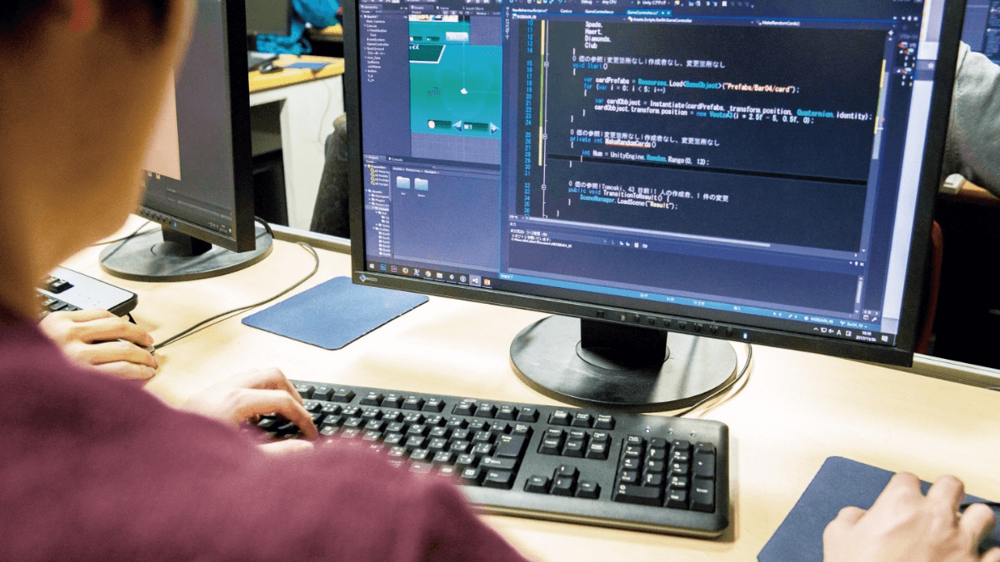
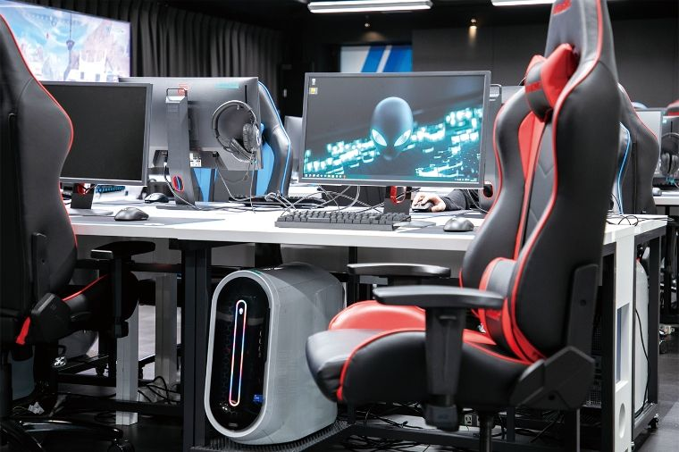
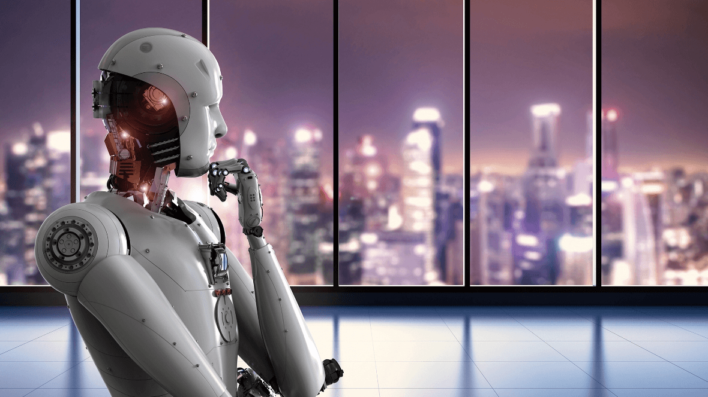
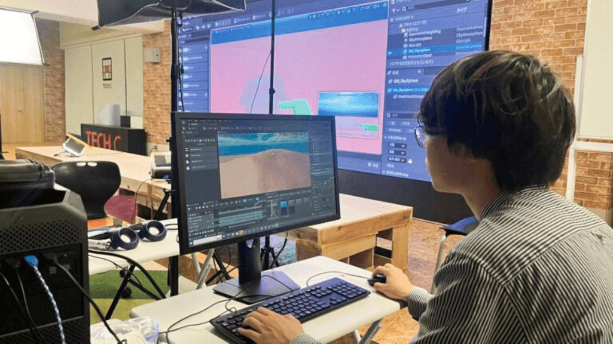
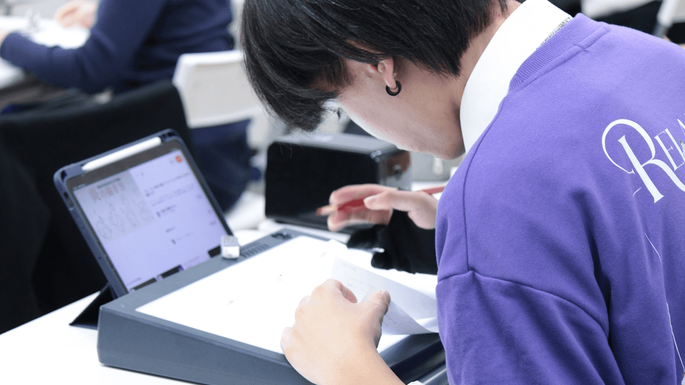

ゲーム分野
感動を生み出す
ゲームクリエイターになる
4年制 / スーパーゲームクリエイター専攻
企画、CG、プログラム、ネットワークなど、必要とされるゲーム業界の幅広い制作技術を4年間で習得します。
3年制 / ゲームワールド
ゲーム開発現場を想定し、主にプログラミング言語の勉強や、ゲーム開発などの実践的プログラマー教育を行います。
3年制 / ゲームCGデザイン専攻
基礎デッサンからスタートし、「ZBrush」や「Maya」などのプロ用ツールを使い、即戦力として活躍できる技術を習得します。
3年制 / ゲームキャラクターデザイン専攻
基礎となるデッサン、最新ゲームで使われるソフトなど幅広い技術で、キャラクターに命を吹き込みます。
esports分野
夢と感動を世界へ
esports業界で活躍する
4年制 / esportsプロマネージメント専攻
esports業界をリードするイベントの運営技術・マネジメント力を身につける。
4年制 / esportsストリーマー＆ゲーム実況専攻
実況技術、動画編集、配信、コミュニケーションスキルなどを学び、ファンを魅了する実況者・ストリーマーを目指す。
3年制 / esportsプロゲーマー専攻
日本から世界最強へ！プロマインドやゲームの戦略を学んで世界を熱狂させるプロesportsプレイヤーを目指す。IT・AI分野
アイデアが未来をつくる
IT・AI・IoTを学ぶ
4年制 / スーパーITエンジニア専攻
Web、データベース、インフラなどIT全般を学ぶ。
4年制 / スーパーAIクリエイター専攻
AIに必要な数学基礎から、機械学習までAI技術全般を学ぶ。
4年制 / スーパーホワイトハッカー専攻
ネットワークセキュリティの最先端技術を身につける。
3年制 / UI・UXデザイナー専攻
ホームページ制作からアプリUI設計まで、先端UI・UXスキルを習得。
3年制 / ITプログラマー専攻
実践的なプログラミング技術を身に付け、世界で活躍するエンジニアへ。
ロボット分野
高い技術で豊かな世界を創る
エンジニアになる
4年制 / ロボット・AIエンジニア専攻
課題を解決するソリューションの設計・実装・制御など本物の実践教育でロボット・AIのスペシャリストを目指します。
CG・映像分野
世界トップクラスの
CG・映像技術を学ぶ
4年制 / スーパーCGクリエイター専攻
多種多様な業界で求められている技術を習得するために、Maya、3dsMax、ZBrushなどのプロが使用するソフトの使い方を学習します。
4年制 / スーパーデジタルメディア専攻
イラストレーション、デザイン、3DCG、Webさらにはアプリ制作まで幅広く総合的に学習します。
3年制 / CGクリエイター専攻
基礎となるデッサンから2DCG、3DCG両面のシーンレイアウト、モデリングなど、さまざまなデジタルメディアに対応した技術を習得します。
3年制 / ネット動画クリエイター専攻
動画制作から配信まで幅広く学び、多くのユーザーにオリジナル動画を届けるクリエイターに
イラスト・アニメ分野
世界で活躍する
クリエイターを目指す
4年制 / スーパーコミックイラスト専攻
基礎から学びメタバース、デジタルアートまで個性派一流のイラストレーターを目指す。
4年制 / スーパーVTuber専攻
VTuberの"裏側"を創るプロを目指し、すべての"動く"を支える次世代エンジニア&クリエイターになる。
3年制 / コミックイラスト専攻
イラスト、キャラクターデザイン、ロゴ、パッケージデザイン、広告など多種多様なイラストに対応できる画力を鍛える。